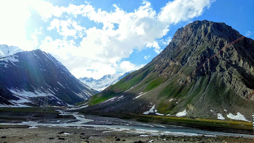
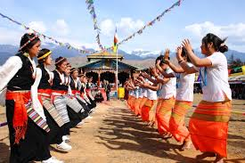

Famous Cities
Leh
- Shanti Stupa: A stunning white-domed stupa offering panoramic views of Leh and the surrounding mountains.
- Leh Palace: A historic royal palace that provides insights into the region's rich heritage and offers spectacular views.
- Hemis Monastery: One of the largest and wealthiest monasteries in Ladakh, known for its annual festival and beautiful architecture.

- Pangong Lake: A breathtaking high-altitude lake famous for its stunning blue waters and scenic surroundings.
- Thiksey Monastery: An impressive monastery resembling the Potala Palace, known for its rich Buddhist culture.
- Khardung La Pass: One of the highest motorable roads in the world, offering breathtaking views of the Himalayas.
Kargil
- Dras War Memorial: A memorial dedicated to the soldiers who fought in the Kargil War, offering insights into the region's history.
- Sankoo Valley: A picturesque valley known for its beautiful landscapes and serene environment, perfect for trekking.
- Mulbekh Monastery: An ancient Buddhist monastery featuring a large rock-carved statue of Maitreya Buddha.

- Kargil Main Bazaar: A vibrant market where you can find local handicrafts, woolen clothes, and traditional foods.
- Lamayuru Monastery: One of the oldest monasteries in Ladakh, known for its stunning architecture and beautiful surroundings.
- Suru Valley: A scenic valley famous for its lush greenery and majestic mountains, ideal for nature lovers and photographers.
Nubra Valley
- Diskit Monastery: The oldest and largest monastery in Nubra, known for its impressive Buddha statue and serene atmosphere.
- Hunder Sand Dunes: Famous for its unique sand dunes, where you can ride double-humped camels and enjoy stunning landscapes.
- Panamik Hot Springs: Natural hot springs with therapeutic properties, located in a picturesque setting.

- Sumur Village: A beautiful village known for its lush greenery and traditional culture, offering a glimpse into local life.
- Shyok River: A stunning river that flows through Nubra Valley, ideal for scenic photography and relaxation.
- Yarab Tso Lake: A serene lake surrounded by mountains, known for its tranquil beauty and crystal-clear waters.
Zanskar Valley
- Padum: The main town of Zanskar, known for its monasteries and vibrant local culture.
- Zanskar River: Famous for its stunning views and frozen landscapes during winter, popular for trekking and rafting.
- Stongdey Monastery: One of the largest monasteries in Zanskar, offering breathtaking views and serene surroundings.

- Sani Monastery: A revered monastery believed to be one of the oldest in the region, known for its ancient murals.
- Penzila Pass: A high mountain pass that offers stunning views of the surrounding landscapes, a must-visit for adventure seekers.
- Lamayuru Monastery: Often referred to as the "moon land," this monastery is famous for its unique landscape and spiritual significance.
Dras
- Dras War Memorial: A memorial dedicated to the soldiers who lost their lives in the Kargil War, offering a poignant reminder of their bravery.
- Kalapathar: A mountain peak known for its stunning views and trekking opportunities, ideal for adventure enthusiasts.
- Shah-e-Hamadan Mosque: A historic mosque reflecting beautiful architecture and cultural significance in the region.

- Dras Valley: Known as the "Gateway to Ladakh," this valley offers breathtaking landscapes and opportunities for photography.
- Suru Valley: A picturesque valley known for its lush greenery, beautiful rivers, and serene environment, perfect for nature lovers.
- Bhagwa Valley: A serene valley offering stunning views and a peaceful environment, ideal for relaxation and meditation.
Adventure Activities
Trekking and Camping in Ladakh
- Chadar Trek: A thrilling trek along the frozen Zanskar River, offering stunning views and a unique experience.
- Markha Valley Trek: A beautiful trek through remote valleys, picturesque villages, and ancient monasteries.
- Stok Kangri Trek: A challenging trek leading to the summit of Stok Kangri, providing breathtaking panoramic views of the Himalayas.

- Camping at Pangong Lake: Experience the serene beauty of Pangong Lake while camping under the stars.
- Camping at Nubra Valley: Enjoy the picturesque landscapes of Nubra Valley with comfortable camping facilities.
- Tso Moriri Lake Trek: A trek that leads to the stunning Tso Moriri Lake, surrounded by snow-capped mountains.
White-water Rafting in Ladakh
- Experience Thrilling Rapids: Navigate through the challenging rapids of the Indus River, perfect for both beginners and experienced rafters.
- Scenic Views: Enjoy breathtaking views of the Himalayas and picturesque landscapes while you paddle through the river.
- Guided Tours: Join professional guides who ensure safety and provide insights about the region's natural beauty and culture.

- Best Time to Visit: The rafting season typically runs from May to September when the water levels are ideal.
- Safety Measures: All tours provide safety gear, including helmets and life jackets, ensuring a secure adventure.
- Local Culture: Combine your rafting adventure with cultural experiences, such as visiting local monasteries and villages.
Festivals and Cultural Events
Hemis Festival
- Overview: The Hemis Festival is celebrated in the Hemis Monastery in Ladakh to honor Guru Padmasambhava, the founder of Tibetan Buddhism.
- Date: Typically held in June or July, depending on the lunar calendar.
- Activities: The festival features vibrant mask dances, traditional music, and religious rituals that attract both locals and tourists.

- Cultural Significance: The festival is a celebration of Ladakhi culture, spirituality, and community, fostering a sense of unity among the people.
- Food and Crafts: Local cuisine and handicrafts are showcased during the festival, providing visitors with a taste of Ladakhi culture.
- Visitor Experience: The festival attracts thousands of visitors each year, offering a unique opportunity to experience the rich heritage of Ladakh.
Losar Festival
- Overview: Losar is the traditional New Year celebration of the Ladakhi people, marking the arrival of spring and the end of winter.
- Cultural Significance: The festival is deeply rooted in Buddhist traditions, symbolizing new beginnings and prosperity.
- Rituals: Festivities include prayers, offerings, traditional dances, and the preparation of special dishes like dumplings and barley beer.

- Celebrations: The festival is celebrated with vibrant decorations, traditional music, and dance performances in homes and public spaces.
- Community Participation: It involves the participation of the entire community, with families visiting each other and sharing festive meals.
- Duration: Losar celebrations typically last for several days, with various events and activities planned throughout.